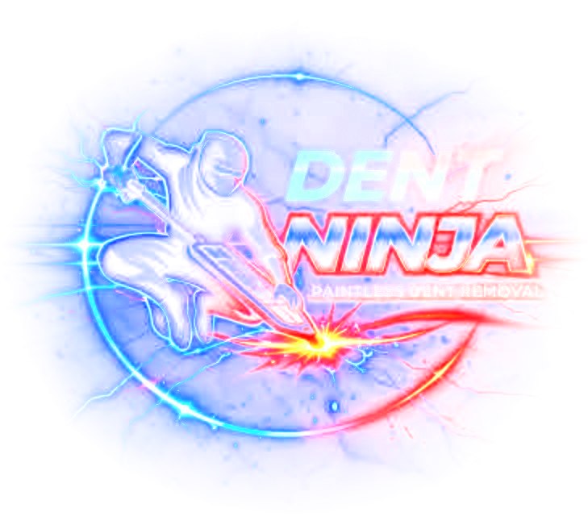
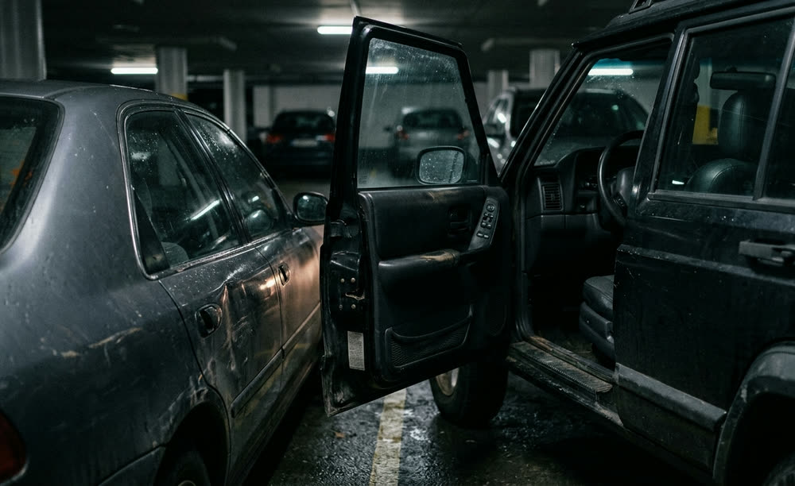
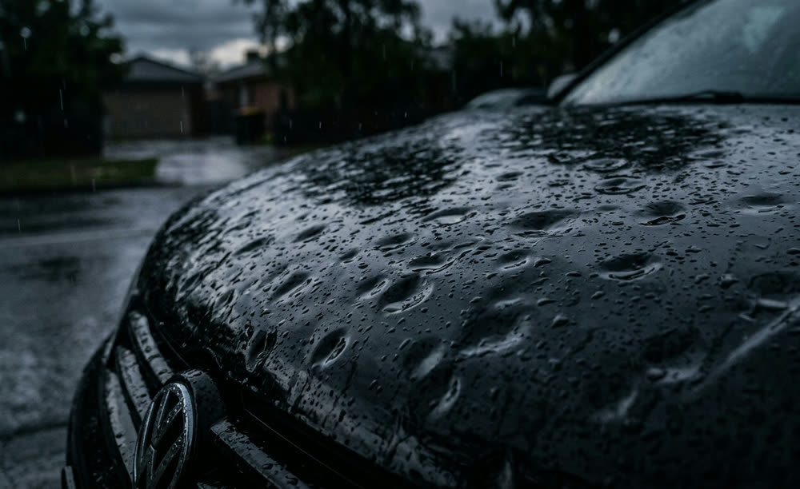
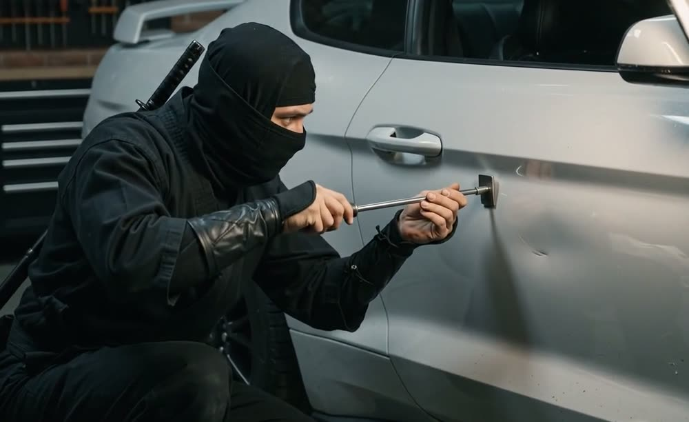
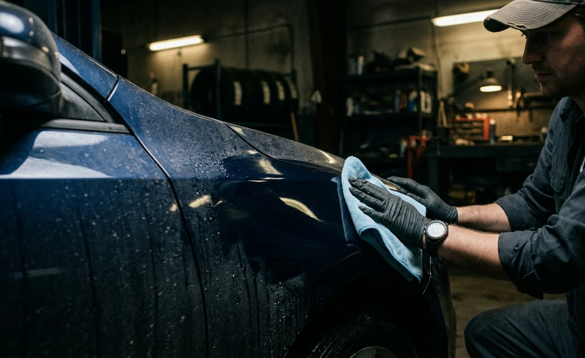
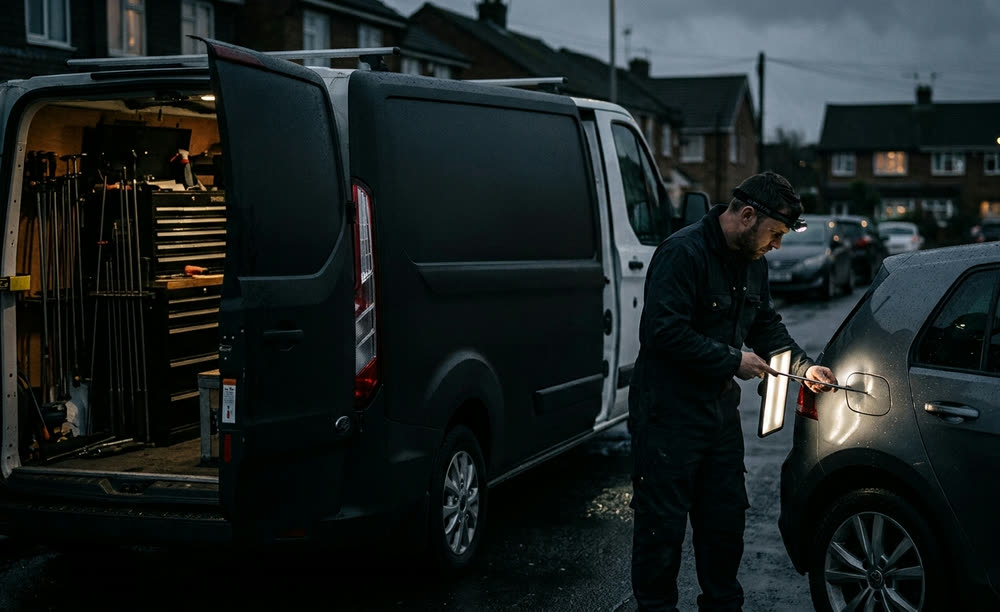

Fast & convenient
Most dents are removed in under two hours. No week-long booking, no courtesy car, no loss of your day.
Under 2 hoursMobile paintless dent removal across Boksburg and the East Rand. The metal is worked back to factory shape from the inside, so your original paint never leaves the car. No paint. No filler. No problem.
01 — The technician
Trained and certified in paintless dent removal, with hands-on panel beating experience behind the certification. That combination matters: knowing how steel and aluminium actually behave under stress is what separates a dent that disappears from a dent that “looks better from here.”
Every repair is read with a reflector board before a tool ever touches the panel — because the reflection tells the truth long before your eyes do.
Formal paintless dent removal certification — correct tooling, correct technique, no shortcuts.
Hands-on time in traditional body repair, so the limits of a panel are understood, not guessed.
If PDR isn't the right call for your damage, you'll be told straight — not sold.

02 — Why paintless
Most dents are removed in under two hours. No week-long booking, no courtesy car, no loss of your day.
Under 2 hoursNo sanding, no filler, no respray, no colour-match gamble. The factory finish that left the plant stays on the car.
Protects resale valueA fraction of traditional body repair. No paint, no consumables, no days of labour — and often below your insurance excess.
Save vs. respray03 — What gets fixed

The classic car-park special. Sharp little dents in doors and quarter panels — the bread and butter of PDR.

Roofs, bonnets and boots peppered with dents. Repaired panel by panel without a single drop of paint.

Long creases and damage running through a swage line — the technical work. Slow, patient, methodical.
Shopping trolleys, bicycle handlebars, garage doors, stray cricket balls. If the paint's intact, it can go.

Clean the panels up before valuation. Dent-free bodywork reads as a cared-for car — and prices like one.

Home, office or workplace. The tools travel; you don't. Quick, convenient and hassle-free.
04 — How it works
WhatsApp a clear picture of the dent — ideally with a reflection across it — plus your vehicle and area.
An honest price and an honest answer on whether PDR is right for that damage. No obligation.
Home, office or work — anywhere in Boksburg and the surrounding East Rand. Booked around your day.
Metal worked back to shape, reflection checked, panel signed off. Usually inside two hours.
Quality work. Honest prices. Ninja results.
Small dent or big — we've got you covered.
05 — Coverage
A mobile paintless dent removal service based in Boksburg, covering the wider East Rand. If you're just outside the list, ask anyway — travel is usually not a problem.
Check my area on WhatsApp06 — Questions
Specialised rods and tools are used to reach behind the panel and massage the metal back to its original shape from the inside, while the dent is read in a reflected light board. Because the panel is never sanded, filled or sprayed, the factory paint stays exactly as it was.
No. That's the entire point of the technique. Provided the paint surface is intact — not cracked, chipped or torn — the finish is left untouched. Original paint is a large part of what your car is worth, so it stays on the car.
Most can. The honest exceptions are dents where the paint is already cracked or flaking, very sharp damage on a hard body line, and dents in spots with no safe access behind the panel. Send a photo and you'll get a straight answer either way — including when a conventional repair is the better option.
Most dents are removed in under two hours. Larger or more complex damage — hail across several panels, or a long crease — takes longer and will be quoted with a realistic time up front.
No. It's a mobile service — home, office or workplace across Boksburg, Benoni, Brakpan, Kempton Park, Springs and surrounding areas. Quick, convenient and hassle-free.
WhatsApp a photo of the dent to 065 640 1620. Take the shot at a slight angle with a reflection running across the damage — that shows the true size far better than a straight-on picture. Include your vehicle make and your area.
It depends on three things: the size of the dent, where it sits on the panel, and how much access there is behind it. A single door ding is quick; a crease through a body line takes hours. PDR is almost always cheaper than a conventional respray because there is no paint, no filler and no days of labour — and a small repair often lands below an insurance excess. Send a photo and you'll get a firm price before any work starts.
Based in Boksburg and mobile across the East Rand — Benoni, Brakpan, Kempton Park, Springs, Germiston, Edenvale, Alberton, Bedfordview and Nigel. If you're just outside that list, ask anyway; travel is usually not a problem.
07 — Get a quote
Fill this in and it opens WhatsApp with your details already typed — just attach your photos and hit send.